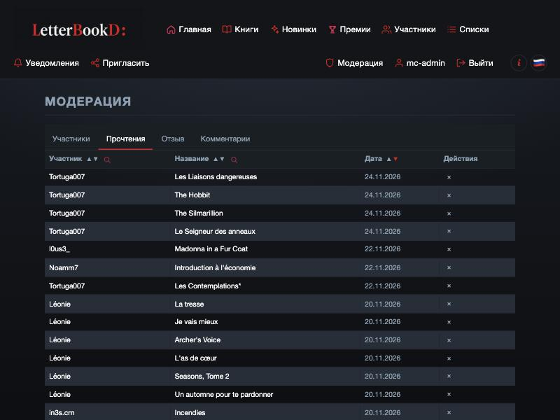

Модерация — Чтения Только для админов
Зачем это нужно: Список каждой записи о чтении (участник × книга) в клубе. Позволяет удалить запись, если она дублирует другую, явно ложная или брошенная.

Как это устроено
Таблица: Участник (ник), Название (книга), Дата (когда чтение было записано), Действия (крестик для удаления). Правила сортировки и фильтрации те же, что на вкладке «Участники». Удаление чтения также удаляет привязанный к нему отзыв, но не комментарии других участников под этим отзывом: они остаются без отзыва и их нужно разобрать на вкладке «Комментарии».
Цепочки действий
Каждая строка — это триггер в интерфейсе, модалка или форма, которые он открывает, и результат.
| Триггер | Модалка / Поля | Эффект |
|---|---|---|
| Значки сортировки и фильтра | — | Тот же механизм, что на вкладке «Участники». |
| Кнопка крестика (×) в строке | Подтверждающая POST-форма. | Удаляет запись о чтении И привязанный к ней отзыв. Комментарии остаются, но ссылаются на удалённый отзыв. |